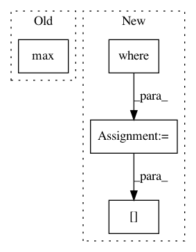

7cd15d13d91e2de78d53a5cdac661e63f64d59e8,prody/dynamics/adaptive.py,,calcStep,#Any#Any#Any#Any#Any#Any#Any#Any#,73
Before Change
.format("%4.3f"%c_sq[0], mode_ids[0]+1))
else:
LOGGER.info("Using {0} modes with square cumulative overlap {1} (Max mode number {2})"
.format(n_sel_modes, "%4.3f"%c_sq[torf_Fmin].max(), np.max(mode_ids)+1))
if np.max(mode_ids) > n_modes-5:
n_modes += 10
After Change
torf_Fmin[0] = True
if not np.all(torf_Fmin):
i = np.where(torf_Fmin)[0].max()
torf_Fmin[i+1] = True
selected_mode_indices = np.arange(anm.numModes())[torf_Fmin]
In pattern: SUPERPATTERN
Frequency: 3
Non-data size: 4
Instances
Project Name: prody/ProDy
Commit Name: 7cd15d13d91e2de78d53a5cdac661e63f64d59e8
Time: 2021-01-05
Author: shz66@pitt.edu
File Name: prody/dynamics/adaptive.py
Class Name:
Method Name: calcStep
Project Name: glm-tools/pyglmnet
Commit Name: fb4b9023f9ec516648d58b4ba2ecd8e241e21618
Time: 2016-11-16
Author: pavan.ramkumar@gmail.com
File Name: pyglmnet/utils.py
Class Name:
Method Name: tikhonov_from_prior
Project Name: nicodv/kmodes
Commit Name: cba9fe8ea6f0d2dd1997d8b61a01efb02c00c8da
Time: 2017-03-29
Author: nico.devos@autogrid.com
File Name: kmodes/util/__init__.py
Class Name:
Method Name: get_max_value_key